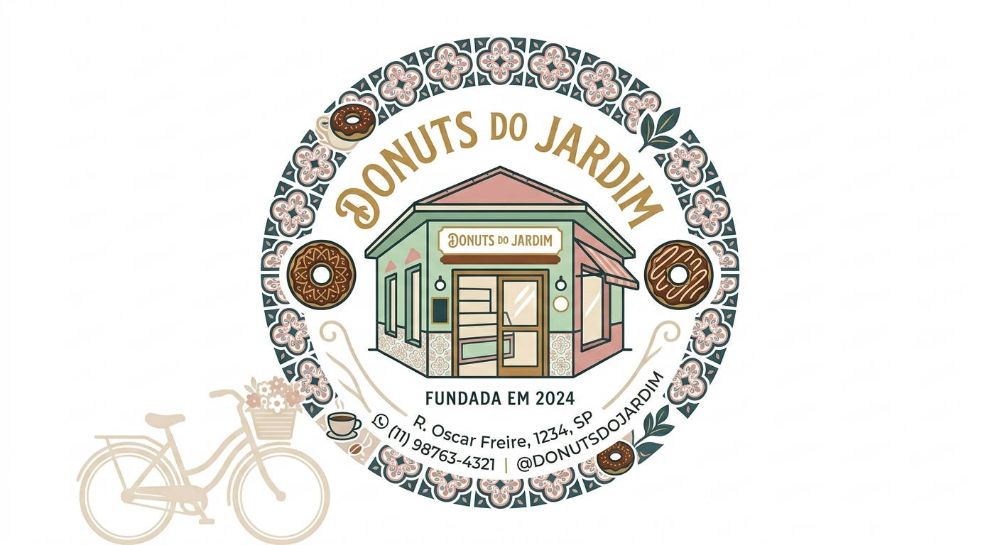
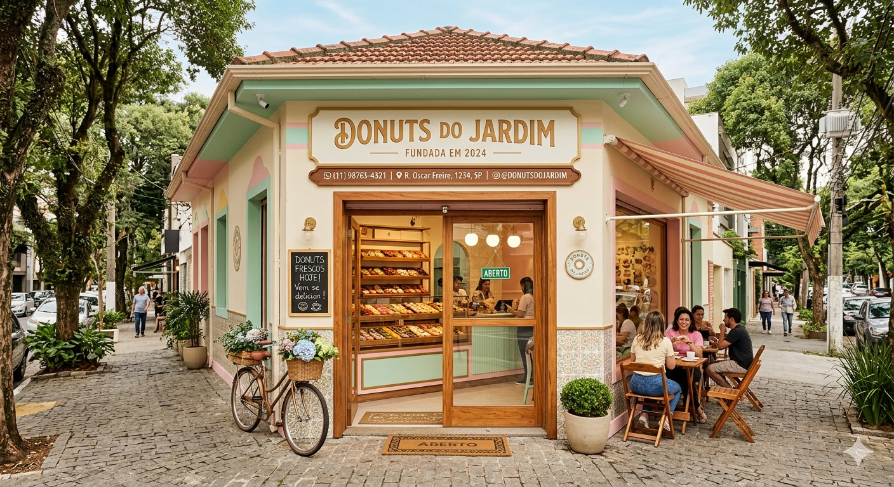
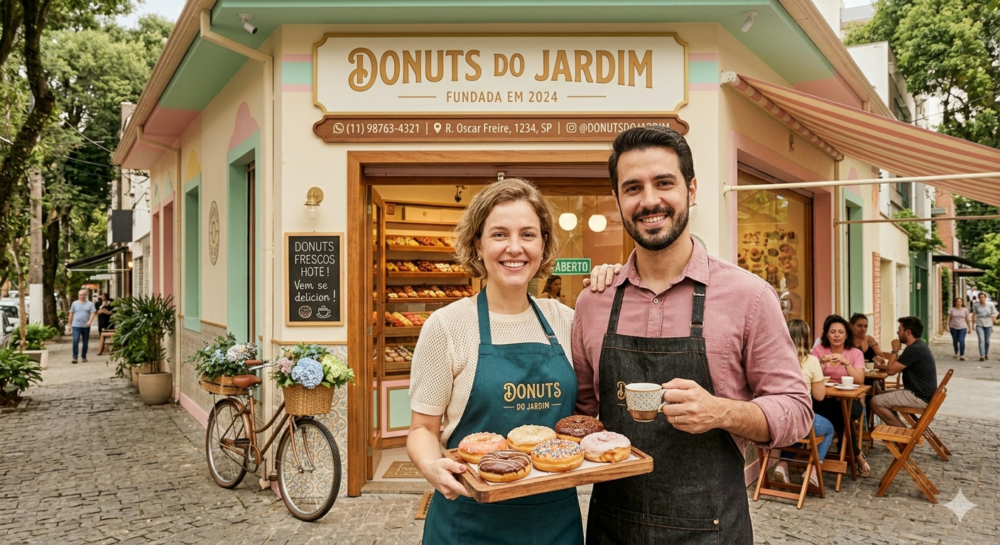

Desde a nossa fundação em 2024, nascemos com a missão de transformar o conceito de sobremesa em São Paulo. O que começou como uma paixão pela confeitaria artesanal floresceu em uma cozinha dedicada a criar o donut perfeito: aquele com a massa leve como uma nuvem, frita no ponto exato e finalizada com ingredientes de altíssima qualidade. Cada unidade que sai do nosso balcão carrega o cuidado e o frescor de quem ama o que faz.
Estamos localizados no coração de São Paulo, prontos para ser o refúgio doce do seu dia a dia. Acreditamos que um bom donut tem o poder de transformar qualquer tarde comum em um momento especial, seja para celebrar uma conquista ou simplesmente para acompanhar um café quentinho. Nossa loja foi pensada para ser um espaço de acolhimento, onde o aroma de açúcar e canela convida você a esquecer a pressa da cidade.
Não deixe para amanhã o desejo que você pode realizar hoje! Venha experimentar nossas combinações exclusivas e descubra por que nossos donuts já se tornaram os favoritos da região. Seja para levar uma caixa recheada para a família ou para se presentear com o seu sabor preferido, estamos esperando por você. A felicidade é redonda e tem um furo no meio — venha buscar a sua! conheça mais sobre a nossa história.

A Donuts do Jardim nasceu em 2024, na Oscar Freire, São Paulo da união entre a precisão do engenheiro Felipe e o olhar artístico da arquiteta Luísa. O casal, fascinado pela confeitaria artesanal, decidiu transformar uma charmosa esquina de São Paulo em um refúgio gastronômico. O começo foi marcado por madrugadas de testes para chegar à "massa nuvem" perfeita: uma receita exclusiva que equilibra leveza e sabor, frita diariamente para garantir o frescor que se tornou a marca registrada da casa.
O desenvolvimento da loja foi impulsionado pelo boca a boca e pelo visual irresistível de suas vitrines, que misturam o rústico com o moderno. Rapidamente, o endereço na capital paulista deixou de ser apenas uma doceria para virar um ponto de encontro da comunidade, onde cada novo recheio autoral era celebrado como um evento. O cuidado de Luísa com a estét ica da loja e a gestão estratégica de Felipe permitiram que o negócio florescesse, mantendo a essência do "feito à mão" mesmo com a demanda crescente.
Atualmente, a Donuts do Jardim é uma referência de qualidade e hospitalidade no bairro, sendo o destino favorito de quem busca uma pausa doce no caos da cidade. Com um cardápio que evoluiu para incluir opções sazonais e cafés especiais, a loja continua fiel ao seu propósito inicial de oferecer momentos de felicidade em formato de anel. Luísa e Felipe seguem presentes no dia a dia, garantindo que cada cliente receba não apenas um donut, mas uma experiência calorosa e inesquecível. Entre em contato conosco
